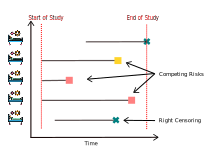

HΛZΛRDOUS#
Gradient-boosting Survival Analysis and Competing Risks#
Survival Analysis, Competing Risks
scikit-learn compatible
scalable gradient boosting
hazardous is a Python library for survival analysis -i.e. time-to-event prediction- and competing risks settings. It introduces SurvivalBoost, a scalable gradient-boosting model designed for this task.
With a scikit-learn-compatible API, the library also offers various metrics for model evaluation adapted for the competing risks setting:
Integrated Brier Score
C-index
Accuracy in Time: the ability to predict the observed event at a given time horizon.
What is the difference between Survival Analysis and the Competing risks setting?#
In contrast to the Survival Analysis setting, the Competing Risks setting accounts for the possibility that multiple event of interest may occur, not just a single event.
It focuses on predicting which event will occur first and when, based on data where some events have not yet been observed.
What is SurvivalBoost?#
SurvivalBoost is a gradient-boosting variant, that offers prediction for survival and competing risks settings, fully compatible with scikit-learn. It can be used with scikit-learn tools such as pipelines, column transformers, cross-validation, hyper-parameter search tools, etc. Using a novel strictly proper scoring rule, the model is trained to predict the cumulative incidence function and the survival function at any horizon. SurvivalBoost puts a focus on predictive the accuracy -defined as the ability to predict the observed event- rather than on inference.
Additional theoretical details about the model can be found in Survival Models: Proper Scoring Rule and Stochastic Optimization with Competing Risks.
See also
The library relies on lifelines for the Kaplan-Meier estimator used in SurvivalBoost. We extend our gratitude to the authors of lifelines for their significant contributions to the survival analysis community, including the implementation of models such as the Kaplan-Meier, Cox model, and Aalen-Johansen, as well as metrics like the C-index and Brier Score.
Note
Quantifying the statistical association or causal effect of covariates on the cumulative event incidence or instantaneous hazard rate is currently beyond the scope of this library.
License: MIT
GitHub repository: soda-inria/hazardous
Changelog: soda-inria/hazardous
Status: under development, API is subject to change without notice.
Contents: